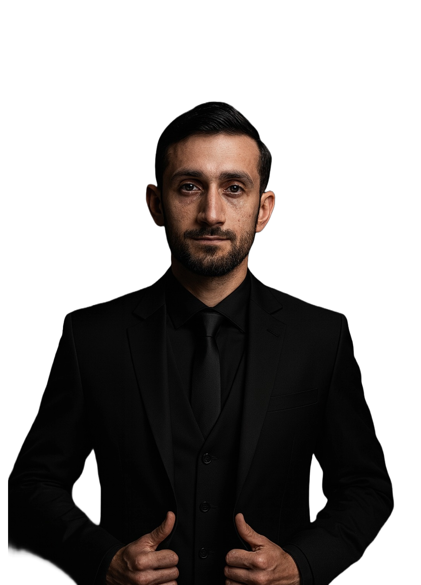
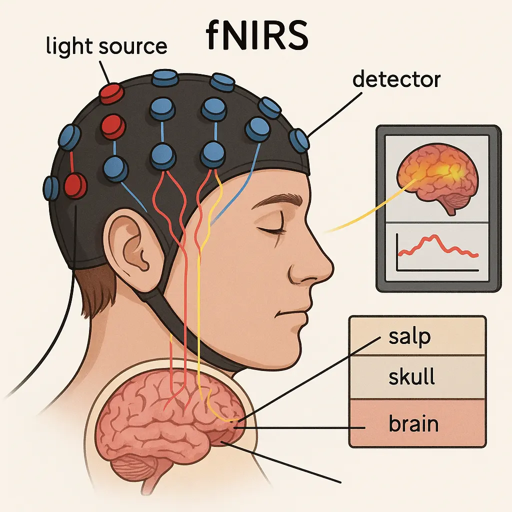

Salman Omar Sohail
Robotics Engineer
PROJECT CLOSEUP
Mobile Manipulation Platform Ridgeback UR5e
INDUSTRIAL PROJECT HIGHLIGHTS

Industrial Orchard Packaging
This project automated apple packaging, employing a robotic arm
(uFactory xARM5) and a depth camera (ZED2i) to identify, orient for optimal presentation
(vibrant colours
facing up), and carefully place apples into diverse packaging. The project was aimed to increase
efficiency and reduce manual labourof packaged fruit in agricultural processing.

Outdoor Inspection Routine
A custom GPS-based security system was developed for a Jackal UGV, leveraging the ROS2 Nav2
framework for autonomous
patrol missions. The project scope was to create a reliable and cost-effective solution for
outdoor security, surveillance,
and potentially initial incident response by enabling robots to navigate and monitor
designated areas.

Underground Pipe Inspection
The Unitree Go2 had special sensors integrated for the inspection of
underground piping tunnels. Equipped with 4 sensors,
including LiDAR and a depth-camera, gas-sensor, and a thermal camera, the robot generated detailed 3D
maps for surveys, enabling remote assessment of
infrastructure integrity and identification of potential maintenance needs, improving safety
and efficiency. The GiF is of another project, underground project cannot be shown.

Quadruped Low-Level Gait Planning
This research focused on enhancing the mobility of Unitree A1 quadruped robots through
advanced gait planning and control. By developing ROS wrappers and utilizing the TOWR optimization framework, the project aimed
to enable these robots to navigate complex and uneven terrains with greater stability and efficiency,
expanding their potential applications in diverse environments.

Vineyard 3D Reconstruction
This project utilized a Husky A200 equipped with over 12 sensors,
including LiDAR and a depth-camera, managed by ROS 2, the rover is capable of generating detailed 3D
precise 3D models of vineyards or any target application.
The robot has been deployed for precision agriculture, including detailed
mapping, plant health monitoring, yield prediction,
and optimization of resource management for improved vineyard productivity and
sustainability.

Retail Service Bot
The development of a retail service bot (ai image due to NDA) aimed to automate various
tasks within retail spaces to enhance customer experience
and operational efficiency. Potential functionalities include guiding customers, managing
inventory, providing product information, and potentially even assisting with order fulfilment,
showcasing the growing role of robotics in the retail sector.

Logistics Humanoid Demo
This project served as a demonstration of how humanoid robots Unitree H1 can be effectively utilized in
logistics and warehousing.
By showcasing tasks such as object manipulation, transportation, and interaction within
human-designed environments,
the demo aimed to highlight the potential for humanoid robots to augment or automate
labour-intensive processes in supply chain operations.

Robotic Bar
The development of a robotic bar focused on automating the process of preparing and serving
drinks. This involves robotic arms for manipulation, precise dispensing mechanisms, and a control
system to manage orders and create consistent beverages, potentially offering benefits in terms of
speed, accuracy, and operational hours in the hospitality industry.

Aloha Tele-operation
This project focuses on utilizing the ALOHA robot, a low-cost open-source hardware system
designed for bimanual teleoperation. The system typically involves a human operator controlling a master set of robotic arms,
which in turn precisely mirror their
movements on a follower set of arms (the ALOHA robot itself). Equipped with multiple
cameras for enhanced perception, ALOHA enables the collection of high-quality real-world demonstrations for imitation
learning in robotics.

Robot Web Control Interface 2024
The Robot Web Control Interface is a web-based platform designed to facilitate the control
and monitoring of robotic systems.
It typically includes features such as real-time video streaming, sensor data visualization,
and control interfaces for various robotic components,
enabling users to interact with and manage robots remotely through a user-friendly web
interface.
ACADEMIC PROJECT HIGHLIGHTS

PROPERTY-BASED TESTING: FORMALIZED ROBOTIC TESTING FOR STANDARD COMPLIANCE
R&D that automates robotic standards validation through simulated testing, verifying
compliance, identifying missing functionalities and software bugs in heterogeneous robots.

FUNCTIONAL NEAR-INFRARED SPECTROSCOPY (FNIRS) TAP DETECTION
Functional near-infrared spectroscopy (fNIR) detected finger taps from brain
with a 92% test accuracy using a Deep Neural Network.

INTELLIGENT WINDING MACHINE AS A FLEXIBLE MANUFACTURING SYSTEM
Design and fabrication of an automated wireless coil-winding machine for
stator coils of 70cc motorcycles.

TOYOTA HUMAN SUPPORT ROBOT TESTING FRAMEWORK
Research and development of automated property-based testing for the Toyota
HSR robot’s perception, manipulation, and navigation stacks.

OSMOSIS FAULT-TOLERANT SYSTEM
Implementation of a fault-tolerant manager that detects errors within the
\href{https://robotnik.eu/products/mobile-robots/summit-xl-en-2/}{Summit XL robot} and
executes the recovery process during a mission around an airport.

DEEP-LEARNING & NATURAL LANGUAGE PROCESSING
Development of entity detectors, image classifiers, text-extractors,
text-summarizers, chatbots, form-fillers, text-preprocessors and more.